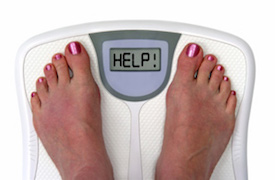

Blah Blah

The majority of us practice more than we really need to. Without a doubt, on the off chance that you need to complete an Ironman marathon, run a marathon, or contend in some insane rivalry, for example, the CrossFit Games, then you'll require either astonishing hereditary qualities or a ton of time staring you in the face to work out.
Be that as it may, on the off chance that you simply need to smolder fat, show signs of improvement body, and target inconvenience spots, you'd be shocked at how little you can really work out, particularly when you utilize the methodology you're going to learn in today's scene – which permits you to get quick fat misfortune with only 8 minutes of activity..
The most effective method to Use Tabata Sets
Have you ever took a stab at fusing something many refer to as "Tabata preparing" into your schedule? In the event that you need to figure out how to lose fat quick with only 8 minutes of activity, then you'll should be acquainted with this style of preparing.
Tabata sets, which are suitably named after Dr. Izumi Tabata, include 4 minutes of extreme activity. Amid those 4 minutes, you substitute between 20 seconds of your most extreme exertion and 10 seconds of complete rest. Here's a video of me exhibiting a Tabata set.
You can do various activities with Tabata preparing – including hop squats, push-ups, sprints, cycling, circular – and so on! They key is to go as hard as you can practice amid the 20-seconds-on and after that rest for the 10-seconds-off. Tabata preparing is not just an incredible way show signs of improvement body quick, however it will likewise altogether help your digestion system and enhance both your high-impact and anaerobic (sprint-style) cardiovascular and strong continuance.
Truth be told, in Dr. Tabata's 1996 study, distributed in the diary of Medicine and Science in Sports and Exercise, subjects enhanced their wellness by 28% after only 6 weeks of preparing, with 5 days of Tabata sets every week. I've likewise composed an article about how even including so as to compel competitors can advantage Tabata sets and high power interim preparing in their preparation schedule.
The 8-Minute Fat Loss Workout
Presently, would you say you are prepared for the Get-Fit Guy turn on the exemplary Tabata set? Here's the means by which it goes:
Step #1: Begin your workout with a solitary 4-minute Tabata set that "warms up" your whole body and works about each muscle bunch. This can be expert with activities, for example, burpees, squat to overhead press, or dumbbell strolling thrusts. The key is to smolder whatever number calories and act the same number of muscles as would be prudent in that short 4-minute time allotment.
Step #2: After you've completed that first Tabata set, rest in the event that you require it (which you most likely will if this is your first involvement with Tabata preparing!). Rest for 1-2 minutes. At that point, when you're prepared, do another Tabata set, however this time, concentrate on the one inconvenience detect that you truly need to work.
For instance, in Step 2, you could do:
The rundown continues endlessly, however you get the thought. That second set is your opportunity to laser focus on a particular region you need to change on your body. As I wrote in my article How to Tone and Lose Fat in One Body Part, the way to "spot lessening" a particular body part is to not just work that body part, but rather to likewise consolidate in the same workout some sort of activity that blazes parcels calories and works loads of muscles. What's more, that is the reason this intense one-two combo is so powerful!
Obviously, on the off chance that you have over 8 minutes to save and you need far better results, I'd prescribe you incorporate a decent warm-up and chill off into your worries.